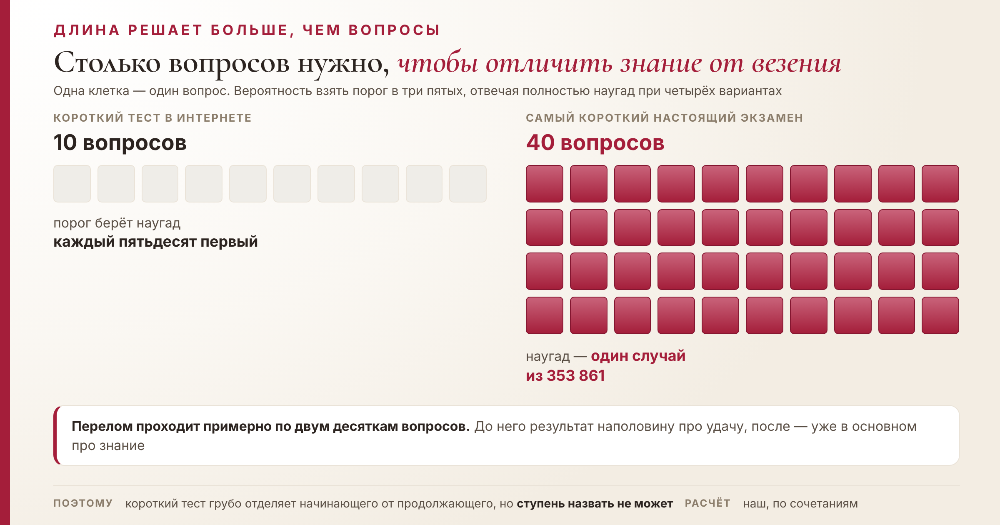
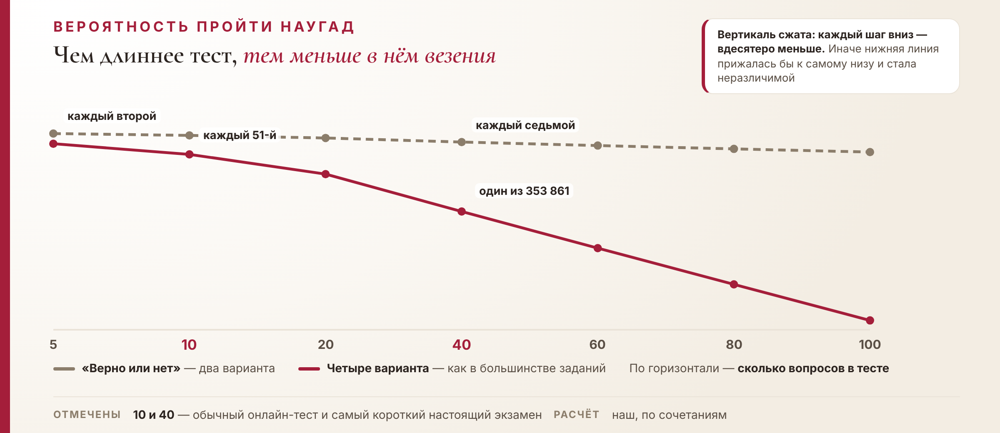

Уровень
Тест на уровень китайского языка: почему короткий онлайн-тест его не определяет


Тест из 10 вопросов с вариантами ответа берёт наугад каждый пятьдесят первый. Это не придирка, а расчёт: при таком числе вопросов результат слишком сильно зависит от везения, чтобы называть его уровнем.
Разберу, сколько решает длина теста, что задания с выбором ответа вообще способны измерить и какие три проверки заменяют один короткий тест. Где брать пробники под конкретный экзамен, разобрано отдельно: пробный тест и как им пользоваться.
Короткий ответ: коротким тестом — никак
Если вопросов меньше двух десятков, результату верить нельзя. Не потому, что вопросы плохие, а потому, что при такой длине случайное попадание слишком вероятно.
Вот числа. Чтобы взять порог в три пятых, отвечая полностью наугад, из пяти вопросов с четырьмя вариантами хватает удачи каждому десятому. Из 10 — каждому пятьдесят первому.
На настоящем экзамене заданий 40 и больше. Там та же удача случается один раз из 353 861 — то есть практически не случается.
Разница между этими двумя числами и есть ответ на вопрос из заголовка. Дело не в том, что онлайн-тесты плохо составлены, а в том, что они слишком короткие, чтобы отличить знание от удачного попадания.
Что это значит для вас. Короткий тест способен грубо отделить «совсем начинающий» от «уже что-то умею». Назвать ступень он не может: для этого в нём слишком мало вопросов.
Дальше — расчёт по длинам, разбор того, что выбор ответа меряет и чего не меряет, и три проверки, которые можно сделать самостоятельно за вечер.
Оговорюсь сразу: конкретных сайтов с тестами я не называю и ссылок на них не ставлю. Речь об устройстве любого такого теста, а не о чьём-то конкретном.
Чем «определить уровень» отличается от «проверить готовность»
Это два разных дела, и их постоянно путают. Пробник под экзамен отвечает на вопрос «готов ли я к этой ступени» — он повторяет её формат и сравнивает результат с порогом.
Тест на уровень обещает большее: назвать вашу ступень, когда вы её не знаете. Для этого ему пришлось бы охватить материал всех ступеней сразу, а не одной.
Разница видна и по тому, как эти два теста заканчиваются. Пробник даёт число, которое вы сравниваете с порогом сами. Тест на уровень сам объявляет ступень, и сверить её не с чем.
Отсюда первая причина, по которой такие тесты неточны. Чтобы различить шесть ступеней, вопросов нужно в разы больше, чем чтобы проверить одну: на каждую ступень их должно прийтись достаточно.
Вторая причина — в том, что ступени не идут ровной лесенкой. Человек может узнавать знаки на одном уровне, понимать на слух на другом, а писать от руки на третьем.
Проверить это легко на себе. Возьмите любой список слов своей предполагаемой ступени и честно отметьте те, которые понимаете без подсказки. Почти наверняка доля окажется не такой, как обещал тест.
Одно число тут просто не помещается. Тест выдаёт его потому, что обещал выдать, а не потому, что оно есть.
Практический вывод простой. Если вы хотите проверить готовность к конкретному экзамену — берите пробник этого уровня. Если хотите понять, с чего начинать, — одного теста не хватит, и об этом ниже.
Сколько решает длина теста
Теперь к расчёту. Он отвечает на простой вопрос: насколько часто порог берут люди, которые не знают вообще ничего и просто тыкают в варианты.
Я посчитала вероятность взять порог в три пятых, отвечая вслепую. Два случая: когда в вопросе четыре варианта и когда вопрос устроен как «верно или нет».
| Вопросов | Нужно верных | Четыре варианта | «Верно или нет» |
|---|---|---|---|
| 5 | 3 | один из 10 | один из 2 |
| 10 | 6 | один из 51 | один из 3 |
| 20 | 12 | один из 1 069 | один из 4 |
| 40 | 24 | один из 353 861 | один из 7 |
| 60 | 36 | один из 102 810 335 | один из 13 |
| 80 | 48 | один из 28 266 947 749 | один из 22 |
| 100 | 60 | один из 7 536 733 998 027 | один из 35 |

Это наш расчёт, а не чья-то опубликованная оценка. Допущения названы прямо: порог взят в три пятых, все вопросы считаются равными, отвечающий не знает ничего.
Посмотрите на выделенные строки. На 10 вопросах везёт каждому пятьдесят первому — в группе из полусотни человек это один. На 40 такого человека можно не ждать вовсе.
Перелом проходит примерно по двум десяткам вопросов. До него результат наполовину про удачу, после — уже в основном про знание.
Вот почему экзамен устроен длинным. На первом уровне 40 заданий, дальше больше, и это не для строгости, а ради устойчивости результата.
| Уровень | Заданий на экзамене | Нужно верных для порога |
|---|---|---|
| HSK 1 | 40 | 24 |
| HSK 2 | 60 | 36 |
| HSK 3 | 80 | 48 |
| HSK 4 | 100 | 60 |
| HSK 5 | 100 | 60 |
Числа заданий — из наших разборов уровней. Третий столбец я посчитала по той же доле в три пятых, чтобы ряд читался вместе с таблицей выше.
Обратите внимание, насколько самый короткий экзамен длиннее обычного онлайн-теста. Разница не в строгости, а в том, что одно измеряет, а другое прикидывает.
Два варианта вместо четырёх: почему это монетка
Длина — не единственное, что решает. Второй столбец расчёта показывает, что бывает, когда в вопросе всего два варианта: «верно» и «нет».
Там картина совсем другая. Даже на 40 заданиях порог берёт наугад каждый седьмой. На десяти — больше трети отвечающих.
Причина очевидна, стоит её назвать. С двумя вариантами случайный ответ верен в половине случаев, и никакая длина теста этого до конца не выправляет.
Что отсюда следует практически. Смотрите не только на число вопросов, но и на то, как они устроены. Тест из «верно или нет» — это монетка с подписями.
Задания такого вида на экзамене встречаются, но они там не одни и не составляют весь тест. В коротком онлайн-тесте они часто и есть весь тест, потому что их проще всего составить.
Года три назад ко мне пришёл человек с готовым ответом: прошёл тест в интернете, получил третий уровень и хотел заниматься сразу с него.
На первом же занятии выяснилось, что знаков он узнаёт примерно на первый уровень, а на слух не разбирает почти ничего. Тест при этом не врал — он просто спрашивал не то.
Вопросов в нём было около десяти, все с вариантами ответа, и половину он, по собственному признанию, выбрал наугад. Везение и уверенный вид сложились в красивое число.
Неприятно было не это, а то, что он успел взять учебник третьего уровня и месяц по нему мучился, решив, что дело в нём самом.
С тех пор я всегда спрашиваю, сколько в тесте было вопросов. Если меньше двадцати, дальше можно не обсуждать: такой результат ничего не говорит ни о чём.
И прошу сделать одну вещь, которая занимает пять минут: написать от руки десяток знаков своего предполагаемого уровня. Выбором ответа это не проверяется никак.
Обычно картина сразу меняется. Узнавать человек умеет заметно больше, чем писать, и настоящий уровень оказывается там, где труднее.
Тот ученик, кстати, начал с первого уровня и через год сдал третий. Просто начал с правильного места, а не с того, которое ему подсказала монетка.
Что тест с выбором ответа меряет, а что нет
Даже длинный тест с вариантами проверяет не всё. Вот что он способен показать, а что остаётся за рамками.
| Что проверяем | Выбором ответа? | Почему |
|---|---|---|
| Узнавание слова | да | ответ уже на экране, его нужно только выбрать |
| Понимание на слух | частично | зависит от записи и от того, сколько раз её дают послушать |
| Письмо от руки | нет | выбором из вариантов знак не напишешь |
| Речь | нет | это отдельный экзамен и отдельный результат |
Главный разрыв — между узнаванием и порождением. Узнать слово в списке вариантов легче, чем вспомнить его самому, и намного легче, чем написать от руки.
Поэтому результат теста с вариантами почти всегда выше настоящего уровня. Это не обман: тест честно меряет узнавание, просто узнавание — самая лёгкая часть.
Для китайского разрыв особенно велик. Знак можно уверенно узнавать годами и при этом не уметь его написать, и ни один тест с вариантами этого не покажет.
С речью ещё проще: проверить её, выбирая из вариантов, нельзя никак. Для неё существует своя проверка, и устроена она совсем иначе: HSKK: как подготовиться к устному экзамену.
Три проверки вместо одного теста
Это то, что я прошу сделать человека, который не знает своего уровня. Занимает вечер, а даёт больше, чем любой тест с вариантами.
- Узнавание — взять список слов своего предполагаемого уровня: отмечать не «видел», а «понимаю без подсказки».
- Слух — включить запись для этого уровня без текста перед глазами: считать не общее впечатление, а долю понятых заданий.
- Письмо — написать от руки несколько знаков из списка: это то, что выбором ответа не проверяется вовсе.
Смотреть нужно на самую низкую из трёх. Уровень определяется по тому, что получается хуже всего, а не по тому, что лучше.
Списки слов и знаков по ступеням у нас посчитаны отдельно, и к такой проверке они прикладываются напрямую: как меняются требования к количеству иероглифов и слов.
Если три проверки дали разные ответы — это нормально и даже полезно. Теперь вы знаете не одно число, а то, где у вас провал, и начинать нужно оттуда.
И последнее. Когда ступень определена, дальше уже уместен пробник: он покажет готовность именно к этому экзамену. С первого уровня это разобрано здесь: HSK 1: как сдать первый уровень с первого раза.
Частые ошибки
- Верить короткому тесту на слово — до двух десятков вопросов результат наполовину про везение.
- Проходить тест несколько раз подряд — вопросы повторяются, и растёт не уровень, а память на ответы.
- Определять уровень по узнаванию — оно всегда выше остального, и опираться на него значит завысить себе ступень.
- Брать учебник по результату теста — ошибка на ступень стоит месяца мучений с неподходящей книгой.
- Считать онлайн-тест подтверждением уровня — документом он не является, для этого есть экзамен: сертификат HSK и что он подтверждает.
Вторая ошибка встречается чаще, чем кажется. Человек проходит тест трижды, видит растущее число и решает, что дело в прогрессе, хотя дело в повторении.
Четвёртая дороже всех остальных. Неподходящий учебник не просто бесполезен: он убеждает человека, что язык ему не даётся, хотя дело было в неверно выбранной ступени.
Чего в статье нет намеренно
- Названий сайтов с тестами. Ссылок на сторонние ресурсы блог не ставит, и советовать конкретный тест я не буду.
- Готового теста внутри статьи. Короткий тест здесь противоречил бы всему, что в ней посчитано.
- Разбора шкалы уровней. Что значит каждая ступень, разобрано у нас отдельно.
- Инструкции, где брать пробники. Это тема соседней статьи, ссылка стоит выше.
- Сколько вариантов в каждом задании экзамена. Я считаю два случая как модели, а не утверждаю устройство каждого задания.
Отдельно скажу про готовый тест. Его здесь нет не из скромности: любой тест, который поместился бы в статью, был бы коротким, а короткому тесту, как посчитано выше, верить нельзя. Ставить его после такого расчёта было бы странно.
И ещё об одном умолчании. Я не называю «средний срок», за который люди доходят до той или иной ступени: он зависит от того, с чего вы начали и сколько занимаетесь, а не от самой ступени.
Частые вопросы (FAQ)
Можно ли бесплатно узнать свой уровень китайского онлайн?
Приблизительно — да, точно — нет. Бесплатные тесты обычно короткие, а на коротком тесте слишком велика роль везения: по нашему расчёту из десяти вопросов с четырьмя вариантами порог берёт наугад каждый пятьдесят первый. Чтобы результату можно было верить, вопросов нужно хотя бы несколько десятков.
Сколько вопросов должно быть в тесте, чтобы ему верить?
Чем больше, тем лучше, и перелом проходит примерно по двум десяткам. На сорока заданиях с четырьмя вариантами угадать порог практически невозможно — это один случай из трёхсот с лишним тысяч. Именно поэтому на настоящем экзамене заданий сорок и больше.
Есть ли тест на первый уровень для начинающих?
Пробники под каждый уровень существуют, и первый уровень не исключение. Но пробник отвечает на другой вопрос: не «какой у меня уровень», а «готов ли я к этому экзамену». Если вы только начинаете и уровня пока не знаете, сначала проверьте себя по трём признакам, о которых речь в статье.
Чем пробный тест отличается от теста на уровень?
Пробник повторяет формат конкретного экзамена и показывает готовность к нему. Тест на уровень обещает большее — назвать вашу ступень, — а для этого ему пришлось бы охватить все уровни сразу и проверить письмо и речь, чего выбор ответа не умеет.
Как подтвердить уровень официально?
Только экзаменом и сертификатом: никакой онлайн-тест документом не является и в вуз или работодателю не предъявляется. Что такое сертификат и что он подтверждает, разобрано у нас отдельно, ссылка стоит в тексте.
Почему результаты двух тестов на одном сайте расходятся?
Потому что короткий тест показывает не уровень, а конкретный набор вопросов, который вам достался, плюс долю везения. Поменялись вопросы — поменялся результат. На длинном тесте разброс гораздо меньше.
Ещё один вопрос, который задают после таких расчётов: а стоит ли вообще проходить онлайн-тесты. Стоит, но с ясной целью — как быструю прикидку перед настоящей проверкой, а не как приговор.
И напоследок то, что важнее всех расчётов выше. Вопрос «какой у меня уровень» почти всегда задают, чтобы понять, с чего начинать, — и для этого число нужно не точное, а честное. Три проверки дают его за вечер и бесплатно. Если хотите, приходите на бесплатный урок: посмотрим все три вместе и назовём ступень, с которой вам стоит начать.
Источники
- Вероятности взять порог наугад — наш расчёт по сочетаниям, с ассертами в коде. Допущения названы в тексте.
- Порог в три пятых — по нашим разборам системы оценки, взят в расчёт как постоянная величина.
- Числа заданий по уровням — 40, 60, 80, 100 и 100 — по нашим разборам уровней.
- Сколько вариантов в заданиях экзамена, не утверждаю: расчёт ведётся для четырёх и для двух как для двух моделей.
- Конкретных тестов и сайтов не называю и не оцениваю: блог не ставит ссылок на сторонние ресурсы.
- Случай с учеником взят из занятий Kitai School; имени не привожу.